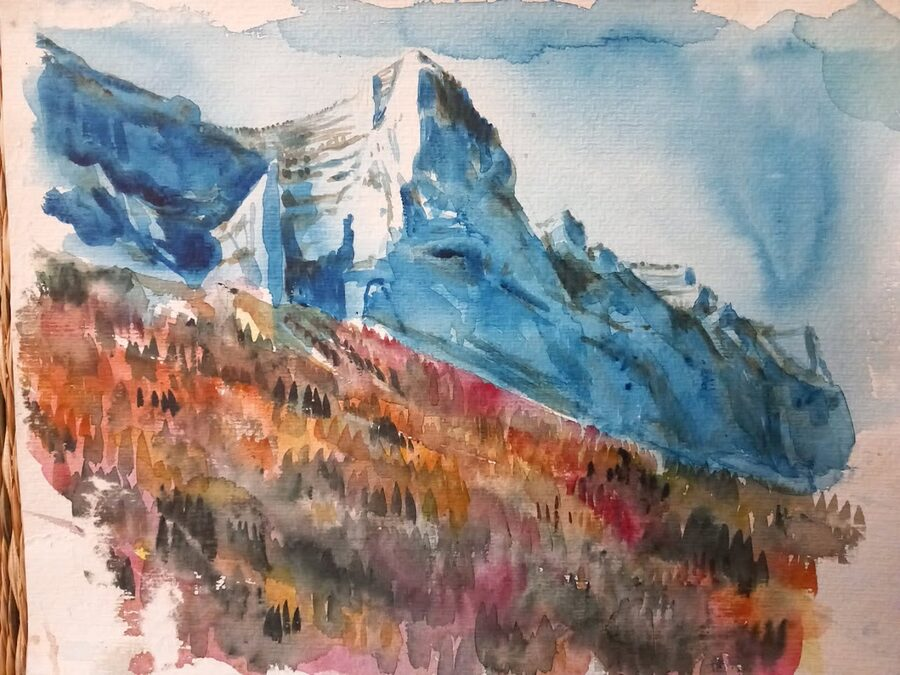

Sportifs
Amateurs ou de haut niveau, pour préparer une échéance, gérer sa saison ou prendre plus de plaisir dans sa pratique.
Au même titre que les habiletés physiques ou techniques, les habiletés mentales jouent un rôle très important dans la performance, notamment à haut niveau, comme l'attestent aujourd'hui de nombreuses études.
J'accompagne les athlètes, étudiants et personnes en quête de performance et d'équilibre dans le développement de leurs habiletés mentales (confiance, gestion des émotions, gestion de l'attention, fixation d'objectifs, etc.).

Mon approche de l'accompagnement est individualisée et centrée sur la personne. Il n'existe pas de recette miracle en préparation mentale et les outils proposés seront toujours adaptés à vos objectifs et vos besoins.
Lors d'un accompagnement, il s'agira d'abord d'explorer votre demande afin d'identifier vos besoins et de dégager des hypothèses ou axes de travail pertinents. L'accompagnement se déroulera ensuite sous la forme d'échanges et d'exercices pratiques avec de l'entraînement mental planifié entre les séances. Le travail sera évalué et ajusté au fil de l'accompagnement.
Le travail pourra comprendre à la fois des exercices guidés en direct (par exemple sur la respiration, l'imagerie mentale ou l'attention) et un plan d'action (entraînement mental isolé ou intégré à la pratique sportive, réflexions, tenue d'un journal du mental, etc.) entre les séances.
La boîte à outils de la préparation mentale est immense ! On peut citer par exemple l'hypnose, la méditation de pleine conscience ou mindfulness, l'imagerie mentale, la respiration, etc.
Comment ça se passe
La durée d'un accompagnement varie fortement en fonction de la personne et des objectifs. Un minimum de trois séances est généralement à prévoir pour construire une démarche que vous pourrez vous approprier et poursuivre en autonomie.
Un échange par email ou téléphone pour cerner vos besoins et convenir d'un premier rendez-vous, en présentiel ou en visio.
Une heure pour faire le point sur votre situation et vos objectifs, et décider ensemble si un accompagnement a du sens.
Chaque séance (1h) combine échanges, retour sur l'entraînement mental réalisé, exercices pratiques et plan de travail pour la suite. Les outils s'ajustent au fil du temps. Séances payées à l'unité, sans engagement.
Vous repartez avec des techniques que vous maîtrisez et pouvez réutiliser seul·e.
Pour qui ?
La préparation mentale s'exporte également hors du domaine du sport : études, projets professionnels et personnels, art.
Amateurs ou de haut niveau, pour préparer une échéance, gérer sa saison ou prendre plus de plaisir dans sa pratique.
Examens, concours, oraux : aborder les échéances avec méthode et sérénité.
Confiance, stress, transitions de vie et accompagnement du changement.
En pratique
50 euros
Me contacter